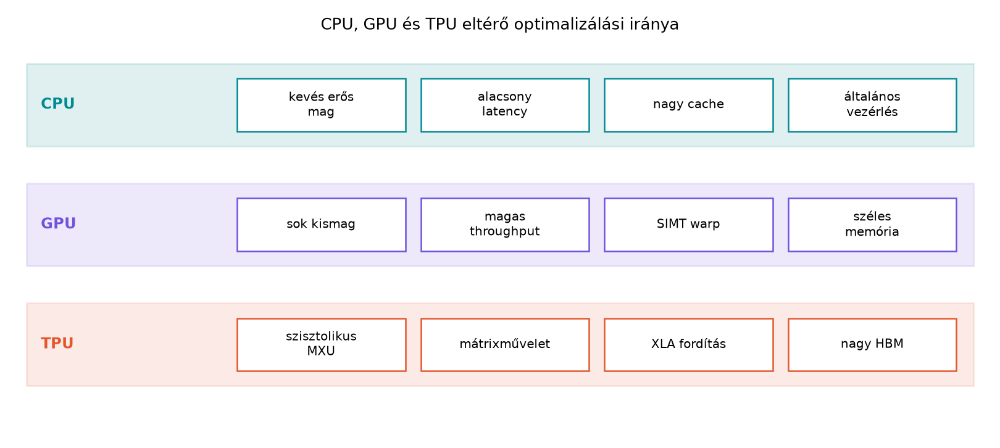

Amikor egy C++ fejlesztő először találkozik a GPGPU-val, a leggyakoribb kognitív csapda az, hogy a GPU-t egyszerűen egy “sokmagos CPU-ként” képzeli el. Ez a megközelítés alapjaiban hibás teljesítménybecslésekhez és rosszul megírt kernelekhez vezet. A CPU és a GPU tervezési filozófiája gyökeresen eltér: míg a CPU-t arra optimalizálták, hogy egyetlen végrehajtási szálat a lehető leggyorsabban futtasson le, addig a GPU-t arra tervezték, hogy több ezer vagy akár több tízezer szálat futtasson egyidejűleg, még akkor is, ha az egyes szálak végrehajtása lassabb.
Ebben a fejezetben felépítjük azt a mentális modellt, amely megmagyarázza, miért más a GPU-k teljesítménymodellezése. Bevezetjük a késleltetés-orientált (latency-oriented) és az áteresztőképesség-orientált (throughput-oriented) tervezés fogalmát, megvizsgáljuk a memóriahierarchiák közötti különbségeket, majd az Amdahl-törvény segítségével realisztikus korlátot adunk a várható gyorsításra.
A CPU egy latency-oriented (késleltetés-orientált) eszköz. Gondoljunk egy modern, nagy órajelű (3–5 GHz) processzorra. A cél az, hogy egy utasításlánc (thread) a lehető legrövidebb idő alatt fusson le. Ennek érdekében a CPU hatalmas tranzisztor-költségvetést áldoz olyan logikákra, amelyek csökkentik az egyes utasítások közötti várakozási időt:
Ezzel szemben a GPU egy throughput-oriented (áteresztőképesség-orientált) eszköz. A GPU-t alkotó Streaming Multiprocesszorok (SM-ek) alacsonyabb órajelen futnak (~1–2 GHz), és hiányoznak belőlük a bonyolult OoO logikák vagy a nagy elágazásbecslő egységek. A GPU tranzisztorköltségvetésének túlnyomó részét aritmetikai logikai egységek (ALU/FP32/FP64/INT32 core-ok) és regiszterfájlok alkotják.
Hogyan birkózik meg a GPU a memória késleltetésével? Tömeges párhuzamossággal. A GPU-n egyszerre több ezer szál van aktív (in-flight). Amikor az egyik warp (32 szálból álló csoport) elakad egy memóriaolvasáson, a hardver egyetlen órajel alatt kiüríti azt, és egy másik, számításra kész warpot ütemez be a helyére. Ezt nevezzük latency hiding-nak (késleltetés-elrejtés). A GPU tehát nem az egyes szálak gyorsaságára, hanem a rendszer teljes áteresztőképességére optimalizál.
Szemléltetés: Ha a CPU egy Ferrari, a GPU egy telebusz. A Ferrari (CPU) egyetlen embert (thread) nagyon gyorsan elvisz A-ból B-be, de egyszerre csak nagyon keveset tud szállítani. A busz (GPU) lassabb, de egyszerre 50 embert visz el. Ha 10{,}000 embert kell eljuttatni, a buszokból álló flotta sokkal rövidebb idő alatt végez, még akkor is, ha egyetlen busz sebessége elmarad a Ferrariétól.
A CPU és a GPU memóriarendszere is tükrözi ezt a filozófiai különbséget.
A CPU memóriarendszerét a hagyományos programozási mintákra (lokális változók, gyakori függvényhívások, pointer-ugrálások) tervezték. A hangsúly az alacsony késleltetésen van. Egy tipikus modern CPU memória-alrendszere:
A GPU memóriarendszere ezzel szemben a maximális sávszélességre van kihegyezve. Egy modern adatközponti GPU esetében:
A lényeg a számok arányában rejlik. Amíg egy CPU DRAM-jának elérési késleltetése nagyon alacsony a GPU-hoz képest, addig a GPU memória-sávszélessége egy nagyságrenddel nagyobb. A GPU-s programok akkor hatékonyak, ha a memória-hozzáféréseket úgy szervezzük, hogy a rendszer mindig a maximális sávszélességen tudjon adatot szolgáltatni (ezt nevezzük coalescing-nak, lásd később, a III. részben).
Ezért a GPU-s teljesítményt szinte soha nem az utasítások számával, hanem a memória-átbocsátóképességgel és a számítási intenzitással (FLOP/byte) mérjük.
Amikor egy C++ kódot GPU-ra portolunk, a tapasztalatlan fejlesztő gyakran lineáris gyorsítást vár (“a GPU-nak 10{,}000 magja van, tehát 10{,}000-szer gyorsabb lesz”). Ezt a téveszmét pontosan leírja az Amdahl-törvény.
Ha egy programnak van egy párhuzamosítható része () és egy soros, párhuzamosíthatatlan része (), akkor az elérhető gyorsítás processzormag használata esetén:
Következmények a GPGPU-ra nézve:
A soros rész dominál: Ha a programnak csak 90%-a párhuzamosítható, az elérhető maximális gyorsítás még végtelen számú maggal is: .
A PCIe transzfer mint soros overhead: A CPU és a GPU közötti adatátvitel (a PCI Express buszon keresztül) gyakran a legnagyobb soros szűk keresztmetszet. Ha egy program 100 ms-ig párhuzamosan fut a GPU-n, de 50 ms-ba telik az adatok feltöltése és leolvasása, a hatékonyság drasztikusan csökken, mert a transzfer ideje alatt a GPU “éhezik”, a CPU pedig várakozik.
Kernelindítási költség: A kernel elindítása a driveren keresztül nem nulla idejű művelet (jellemzően 5–20 µs). Ha túl sok apró, rövid kerneleket indítunk, ez a soros overhead felfalja a párhuzamos nyereséget.
Az Amdahl-törvény gyakorlati alkalmazása a heterogén rendszerekben: A mai GPGPU programozás nem arról szól, hogy a CPU-t lecseréljük, hanem hogy heterogén módon használjuk a kettőt. A CPU (Host) felel a soros logikáért, az I/O-ért, a fájlműveletekért és a bonyolult, elágazásokkal teli vezérlésért. A GPU (Device) felel a nagyméretű, homogén adatpárhuzamos régiókért.
Ebben a laborban egy egyszerű, de tanulságos mérést végzünk: a Saxpy
(Single-precision A*X Plus Y) műveletet
méretű tömbön. A művelet: y[i] = a * x[i] + y[i]. Ez a
művelet tökéletesen adatpárhuzamos, így ideális a GPU számára, azonban
megmutatja a memória-sávszélesség korlátait.
Környezet (példa, helyőrző értékekkel): > GPU: NVIDIA GeForce RTX 4070 (12 GB) > Driver: 550.54.14 > CUDA: 12.4 > OS: Ubuntu 22.04 LTS > Fordító: nvcc (g++ 12.3 hoszt-kompilátor) > Megjegyzés: A konkrét mérési értékek az adott hardveren változhatnak; az alábbiak a mérési módszertan bemutatására szolgálnak.
A CPU implementáció (C++17):
// cpu_saxpy.cpp
#include <vector>
#include <chrono>
#include <iostream>
void saxpy_cpu(float a, const std::vector<float>& x, std::vector<float>& y) {
for (size_t i = 0; i < x.size(); ++i) {
y[i] = a * x[i] + y[i];
}
}
int main() {
const size_t N = 64 * 1024 * 1024; // 64M elem
std::vector<float> x(N, 1.0f), y(N, 2.0f);
const float a = 0.5f;
// Warm-up
saxpy_cpu(a, x, y);
auto start = std::chrono::high_resolution_clock::now();
saxpy_cpu(a, x, y);
auto end = std::chrono::high_resolution_clock::now();
double time_ms = std::chrono::duration<double, std::milli>(end - start).count();
double bandwidth = (3 * N * sizeof(float)) / (time_ms / 1000.0) / 1e9;
std::cout << "CPU Time: " << time_ms << " ms, Effective Bandwidth: " << bandwidth << " GB/s\n";
return 0;
}A GPU implementáció (CUDA C++):
// gpu_saxpy.cu
#include <cuda_runtime.h>
#include <iostream>
#include <vector>
// Hibakezelő makró (kötelező elem a könyv laborjaiban)
#define CHECK_CUDA(call) { \
cudaError_t err = call; \
if (err != cudaSuccess) { \
std::cerr << "CUDA error at " << __FILE__ << ":" << __LINE__ \
<< " -> " << cudaGetErrorString(err) << std::endl; \
exit(EXIT_FAILURE); \
} \
}
__global__ void saxpy_kernel(float a, const float* x, float* y, size_t n) {
size_t i = blockIdx.x * blockDim.x + threadIdx.x;
if (i < n) {
y[i] = a * x[i] + y[i];
}
}
int main() {
const size_t N = 64 * 1024 * 1024;
const float a = 0.5f;
size_t bytes = N * sizeof(float);
std::vector<float> h_x(N, 1.0f), h_y(N, 2.0f);
float *d_x, *d_y;
CHECK_CUDA(cudaMalloc(&d_x, bytes));
CHECK_CUDA(cudaMalloc(&d_y, bytes));
// Host -> Device másolás
CHECK_CUDA(cudaMemcpy(d_x, h_x.data(), bytes, cudaMemcpyHostToDevice));
CHECK_CUDA(cudaMemcpy(d_y, h_y.data(), bytes, cudaMemcpyHostToDevice));
// Launch konfiguráció: 256 szál/blokk, elegendő blokk az N-hez
int threads = 256;
int blocks = (N + threads - 1) / threads;
// Warm-up
saxpy_kernel<<<blocks, threads>>>(a, d_x, d_y, N);
CHECK_CUDA(cudaDeviceSynchronize());
// Mérés (CUDA events a pontos időmérésért)
cudaEvent_t start, stop;
cudaEventCreate(&start);
cudaEventCreate(&stop);
cudaEventRecord(start);
saxpy_kernel<<<blocks, threads>>>(a, d_x, d_y, N);
cudaEventRecord(stop);
CHECK_CUDA(cudaDeviceSynchronize());
float time_ms = 0.0f;
cudaEventElapsedTime(&time_ms, start, stop);
double bandwidth = (3 * N * sizeof(float)) / (time_ms / 1000.0) / 1e9;
std::cout << "GPU Time: " << time_ms << " ms, Effective Bandwidth: " << bandwidth << " GB/s\n";
// Device -> Host (validációhoz)
CHECK_CUDA(cudaMemcpy(h_y.data(), d_y, bytes, cudaMemcpyDeviceToHost));
CHECK_CUDA(cudaFree(d_x));
CHECK_CUDA(cudaFree(d_y));
return 0;
}Mérési napló és kiértékelés:
| Implementáció | Idő (ms) | Eff. sávszélesség (GB/s) | Megjegyzés |
|---|---|---|---|
| CPU (1 mag) | Kb. 80–120 ms | Kb. 6–10 GB/s | A CPU-t a DRAM sávszélessége és a párhuzamosítás hiánya korlátozza. |
| GPU (RTX 4070) | Kb. 0{,}5–0{,}8 ms | Kb. 1500–2500 GB/s | A GPU a dedikált GDDR6X memória sávszélességén dolgozik. |
Várt vs. Mért eredmény: A fenti táblázat várható eredményeket mutat. A mért értékek attól függenek, hogy a hoszt-kód (CPU) mennyire van optimalizálva (pl.
-O3fordítási flag), és hogy a GPU milyen órajelen boost-ol. A mérés során atime_msértéke csak a kernel 1 ismétlését mutatja a warm-up után. Fontos: Ha a CPU oldalon a fordító vektorizálja a ciklust (AVX2/AVX-512), a CPU teljesítménye jelentősen javulhat, de a nagyságrendi különbség a GPU javára megmarad nagy adatméretnél.
cudaMemcpy 50 ms-ot vett igénybe).cudaMemcpy-k is jelentősen befolyásolják.Ebben a fejezetben megalapoztuk a GPU gondolkodásmódját. Megértettük, hogy a CPU egy késleltetés-orientált, míg a GPU egy áteresztőképesség-orientált eszköz. Ez a különbség határozza meg a memóriahierarchiát (nagy cache a CPU-n, hatalmas sávszélesség a GPU-n) és az optimalizálás célját. Bevezettük az Amdahl-törvényt, amely megmutatja, hogy a soros részek (mint a PCIe másolás) hogyan korlátozzák a valós gyorsítást.
Önellenőrző kérdés: Egy mérnök a következőt tapasztalja: van egy szimulációs kódja, amely 95%-ban párhuzamosítható. Amikor lefuttatja a GPU-n, óriási gyorsítást lát a tiszta számítási részben (100-szoros a CPU-hoz képest). Azonban amikor a teljes alkalmazást nézi, a GPU-s verzió csak 10-szer gyorsabb összességében. Az Amdahl-törvény és a heterogén memóriamodell alapján indokolja meg, miért állhat elő ez a helyzet, és milyen optimalizálási stratégiát javasolna a teljes alkalmazás gyorsítására? (Válaszában térjen ki a PCIe transzfer szerepére és a GPU ütemezésére!)